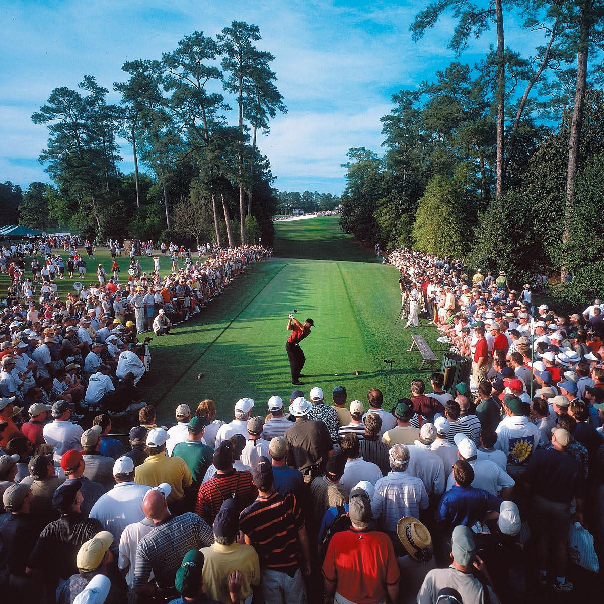

Rows: 1,387
Columns: 13
$ ...1 <dbl> 1, 2, 3, 4, 5, 6, 7, 8, 9, 10, 11, 12, 13, 14, 15, 16…
$ playerName <chr> "Luke List", "Will Zalatoris", "Joseph Bramlett", "Wy…
$ country <chr> "United States", "United States", "United States", "U…
$ avgDriveDist <dbl> 319.5, 317.4, 315.3, 313.0, 311.1, 310.6, 310.5, 310.…
$ drivePct <dbl> 60.71, 58.93, 73.21, 62.50, 62.50, 66.07, 60.71, 69.6…
$ avgPuttsPerRound <dbl> 28.00, 26.50, 28.50, 27.00, 28.50, 28.75, 28.00, 26.5…
$ onePuttPct <dbl> 43.06, 47.22, 43.06, 47.22, 44.44, 33.33, 41.67, 44.4…
$ driveSG <dbl> 0.724, 0.787, 1.554, 0.352, 1.297, 1.407, 1.139, -0.9…
$ puttsSG <dbl> -0.529, -0.752, -0.045, 0.500, 0.190, -0.529, 0.475, …
$ avgScore <dbl> 70.510, 69.435, 70.173, 70.435, 69.935, 69.760, 70.68…
$ Money <dbl> 79420, 256500, 39683, 161500, 207100, 184300, 119700,…
$ Points <dbl> 39, 92, 20, 60, 75, 68, 50, 8, 5, 30, 12, 12, 500, 80…
$ tournament <chr> "The American Express", "The American Express", "The …4 Linear Regression with Regularization
“Other players may outplay me from time to time, but they’ll never outwork me.” - Tiger Woods

In the world of sports analytics, predicting player performance or team success can be highly complex due to the large number of variables involved. Linear regression serves as a foundational model for predicting continuous outcomes based on one or more predictor variables. However, in the case of many predictors, regularization methods like Lasso and Ridge regression are often used to enhance the model’s generalizability by adding penalty terms that discourage overfitting.
4.1 Introduction to Regularization
Regularization techniques modify the basic linear regression model by adding a penalty term to the loss function, which helps prevent overfitting, especially when there is a high number of predictor variables.
Overfitting occurs when a model becomes too complex and fits the noise or random fluctuations in the training data rather than capturing the underlying pattern. In simpler terms, an overfitted model performs exceptionally well on the training data but poorly on unseen data (test data) because it has learned the specific details and random patterns of the training set, which are not applicable to new data.
In sports analytics, overfitting can happen when we use too many variables or highly specific features, such as detailed player statistics that are not universally predictive across seasons or games. While the model may perform well on historical data, its predictive power decreases significantly when faced with new or future data, such as the next season’s performance.
Overfitting can be identified by looking for a large discrepancy between the performance of the model on the training data and the test data. For instance, if a model’s training error is very low but its test error is much higher, it’s a strong indication that overfitting has occurred.
Regularization techniques are designed to prevent overfitting by adding a penalty to the model’s complexity, effectively limiting the size of the coefficients and reducing the model’s sensitivity to noise in the training data.
The primary types of regularization are:
- Ridge regression (L2 regularization): Adds a penalty proportional to the square of the coefficients.
- Lasso regression (L1 regularization): Adds a penalty proportional to the absolute value of the coefficients, encouraging sparse solutions where some coefficients are driven to zero.
Both Ridge and Lasso are helpful when we want to reduce the complexity of the model by limiting the size of the regression coefficients. This is particularly useful when working with a large number of predictors, as is often the case in sports analytics.
4.1.1 Elastic Net Regularization
While Ridge and Lasso regression are two popular methods of regularization, Elastic Net combines elements of both Lasso and Ridge to create a more flexible and powerful regularization technique. Elastic Net is particularly useful when dealing with a large number of correlated predictors, a common scenario in sports analytics where multiple factors (e.g., player statistics, team metrics) are often highly interrelated.
Elastic Net regularization works by adding both the L1 penalty (from Lasso) and the L2 penalty (from Ridge) to the loss function. The model can be tuned to emphasize either the L1 or the L2 penalty, or a balance between the two, depending on the characteristics of the data.
Elastic Net Formula
The Elastic Net penalty term is a linear combination of the L1 and L2 penalties:
\[ \text{Penalty} = \alpha \cdot \lambda_1 \cdot \sum_{j} |\beta_j| + (1 - \alpha) \cdot \lambda_2 \cdot \sum_{j} \beta_j^2 \]
Where:
- \(\lambda_i\) is the regularization strength (a non-negative constant).
-
\(\alpha\) controls the mixing between Lasso and Ridge:
- If \(\alpha = 1\), Elastic Net behaves like Lasso (L1 regularization).
- If \(\alpha = 0\), Elastic Net behaves like Ridge (L2 regularization).
- Values between 0 and 1 represent a mix of Lasso and Ridge.
Elastic Net is especially advantageous when:
- There are many correlated features: Lasso tends to pick one feature from a group of highly correlated features and discard the rest, which might not be ideal when all features are relevant. Ridge, on the other hand, tends to shrink the coefficients of correlated predictors equally, but this may not result in a sparse model.
- When you want to maintain the strengths of both Ridge and Lasso: Elastic Net can provide a balance between variable selection (via Lasso’s L1 penalty) and coefficient shrinkage (via Ridge’s L2 penalty), making it more robust in various scenarios.
4.2 The PGA2022.csv dataset
To demonstrate these methods, we will use the PGA2022.csv dataset. Each row in the dataset gives the measures for one golfer in one tournament. The dataset covers 19 PGA tournaments from the 2022 season with 1387 cases in all. Each tournament consists of four rounds of golf. Some golfers are eliminated after the first two (or sometimes three) rounds. Only players who competed in all four rounds (i.e. those that made the “cut”) are included in this dataset. Below are the variables:
-
playerName: Name of the player -
country: The country where the player is from -
avgDriveDist: Average driving distance (in yards) -
drivePct: Percentage of times a tee shot comes to rest in the fairway -
driveSG: Strokes gained off the tee measures player performance off the tee on all par 4s and par 5s of how much better or worse a player’s drive is than the PGA Tour average -
avgPuttsPerRound: Average number of total putts per round -
onePuttPct: Percentage of times it took one putt to get the ball into the hole -
puttsSG: Strokes gained putting measures how many strokes a player gains or loses on the greens compared to the PGA Tour average -
avgScore: The scoring average is the total strokes divided by the total rounds -
Money: The official money is the prize money award to the Professional members -
Points: FedexCup Regular Season Points are awarded points by finished position for performance in each tournament -
Tournament: The tournament where the PGA Tour is taking place
We’ll use the parsnip package from tidymodels to fit both Ridge and Lasso regression models.
4.3 Loading and Preparing the Data
First, let’s load the dataset and take a look at its structure.
4.4 Data Preprocessing
We’ll use the recipes package from tidymodels to preprocess the data before fitting the models. The recipe function allows us to define the necessary preprocessing steps in a pipeline, ensuring that the data is appropriately prepared for modeling.
We’ll start by performing the following steps:
- Handling Missing Data: Remove any rows with missing values.
- Feature Selection: Select only the relevant predictor variables for the model.
- Scaling and Centering: Scale the numerical predictors so that they have a mean of 0 and a standard deviation of 1. This is especially important for regularization models, as the penalty terms are sensitive to the scale of the variables.
Let’s create a recipe for preprocessing the golf dataset:
golf_recipe = recipe(Points ~ avgDriveDist + drivePct + driveSG +
avgPuttsPerRound + onePuttPct + puttsSG,
data = golf_data) |>
step_naomit(all_predictors(), Points) |>
step_normalize(all_numeric_predictors())
prepped_recipe = prep(golf_recipe, training = golf_data)
processed_data = bake(prepped_recipe, new_data = NULL)
glimpse(processed_data)Rows: 1,313
Columns: 7
$ avgDriveDist <dbl> 1.21659476, 1.06586384, 0.91513291, 0.75004666, 0.613…
$ drivePct <dbl> 0.01282035, -0.16777722, 1.28106170, 0.19443251, 0.19…
$ driveSG <dbl> 0.9362623, 1.0364409, 2.2560757, 0.3447315, 1.8474106…
$ avgPuttsPerRound <dbl> -0.4514846, -1.5157562, -0.0967274, -1.1609990, -0.09…
$ onePuttPct <dbl> 0.35409234, 0.98615311, 0.35409234, 0.98615311, 0.563…
$ puttsSG <dbl> -0.92076989, -1.17574961, -0.36736101, 0.25579569, -0…
$ Points <dbl> 39, 92, 20, 60, 75, 68, 50, 8, 5, 30, 12, 12, 500, 80…Explanation of the Recipe Steps:
step_naomit(all_predictors(), Points): This step removes any rows with missing values in the predictors or in the response variablePoints. This is useful for cleaning the data and ensuring that the model is not affected by missing values.step_normalize(all_numeric_predictors()): Normalizing the numeric predictors is crucial for models that involve regularization, as it ensures that all variables are on the same scale. This step scales the predictors so that they each have a mean of 0 and a standard deviation of 1.
After applying the recipe, we can see the processed data with all the necessary transformations.
4.5 Splitting into Training and Testing Sets
In any predictive modeling task, it’s crucial to evaluate the model’s performance on data that it has not seen before. To achieve this, we split the dataset into two parts: a training set used to fit the model, and a testing set used to evaluate the model’s performance. A common approach is to allocate 80% of the data to the training set and 20% to the testing set.
We can use the initial_split() function from the rsample package, which is part of the tidymodels ecosystem, to split the data into training and testing sets. The split function randomly selects the specified proportion of data for the training set, while the remaining data is reserved for testing.
Let’s split the golf data:
set.seed(1004)
split = initial_split(golf_data, prop = 0.8)
train_data = training(split)
test_data = testing(split)By splitting the data in this way, we ensure that the model will be trained on one subset of the data and tested on an entirely different subset, providing a more accurate measure of its performance on unseen data.
4.5.1 When to Split the Data: Before or After Preprocessing?
When working with machine learning or statistical models, one important decision is whether to split the dataset before or after the preprocessing stage. Both approaches have their implications, and understanding the correct order can help avoid potential data leakage and ensure the validity of your model’s evaluation.
Splitting Before Preprocessing
Advantages:
- Avoids Data Leakage: If you split the data first, the training set remains entirely separate from the testing set during the entire preprocessing process. This ensures that no information from the test set is used in the preprocessing of the training data, which could lead to an overestimation of the model’s performance (i.e., data leakage).
- Realistic Evaluation: Splitting before preprocessing mimics a real-world scenario where you wouldn’t have access to the entire dataset when making predictions on new data. By applying preprocessing only to the training data, we ensure that the model is evaluated on truly unseen data, which is a more realistic test of its generalizability.
First, split the data into training and testing sets. Then, apply preprocessing steps like normalization, missing value imputation, or feature engineering only to the training data. The testing data should remain untouched and be used only for final evaluation.
set.seed(1004)
split = initial_split(golf_data, prop = 0.8)
train_data = training(split)
test_data = testing(split)
golf_recipe = recipe(Points ~ avgDriveDist + drivePct + driveSG +
avgPuttsPerRound + onePuttPct + puttsSG,
data = train_data) |>
step_naomit(all_predictors(), Points) |>
step_normalize(all_numeric_predictors())
prepped_recipe = prep(golf_recipe, training = train_data)
processed_train_data = bake(prepped_recipe, new_data = NULL)
processed_test_data = bake(prepped_recipe, new_data = test_data)Splitting After Preprocessing
Potential for Data Leakage: If you preprocess the entire dataset before splitting, the test data may influence the preprocessing of the training data. For example, when normalizing the data, using the entire dataset could result in a situation where information from the test data (such as the mean or standard deviation) is inadvertently used to transform the training data. This can lead to a more optimistic estimate of the model’s performance, as it’s effectively “leaking” knowledge from the test set into the training process.
The best practice is to split the data before preprocessing to avoid data leakage and ensure that the test set remains a true representation of unseen data. By preprocessing only the training data and then applying the same transformations to the test set, we ensure that the model’s evaluation is based solely on data that the model has not seen during the training phase.
This approach allows for an honest evaluation of how well the model will perform on truly new data, reflecting the challenges faced in real-world predictions.
4.6 Defining the Model
After preprocessing the data and splitting it into training and testing sets, we can proceed to define the regression models. In this section, we will define models for Lasso, Ridge, and Elastic Net regularization using the parsnip package from tidymodels. These regularization techniques help reduce overfitting and improve the generalizability of the model, especially when working with many predictors.
4.6.1 Lasso Regression (L1 Regularization)
Lasso regression applies L1 regularization, which adds a penalty proportional to the absolute value of the coefficients. This penalty encourages sparsity, meaning some of the coefficients may be driven to zero, effectively performing feature selection.
In tidymodels, we can define the Lasso regression model as follows:
lasso_model = linear_reg(penalty = 0.1, mixture = 1) |>
set_engine("glmnet") |>
set_mode("regression")
lasso_fit = fit(lasso_model, Points ~ avgDriveDist + drivePct + driveSG +
avgPuttsPerRound + onePuttPct + puttsSG,
data = processed_train_data)
# View the fitted model
lasso_fit |> tidy()# A tibble: 7 × 3
term estimate penalty
<chr> <dbl> <dbl>
1 (Intercept) 43.6 0.1
2 avgDriveDist 1.49 0.1
3 drivePct 0.570 0.1
4 driveSG 22.0 0.1
5 avgPuttsPerRound -6.88 0.1
6 onePuttPct -3.05 0.1
7 puttsSG 25.8 0.1Explanation:
-
penalty = 0.1: The penalty parameter controls the strength of the regularization. A higher penalty results in more shrinkage of the coefficients. -
mixture = 1: Settingmixtureto 1 specifies that we are using Lasso (L1 regularization). If it were set to 0, it would correspond to Ridge regression (L2 regularization).
4.6.2 Ridge Regression (L2 Regularization)
Ridge regression applies L2 regularization, which adds a penalty proportional to the square of the coefficients. This type of regularization does not result in sparse solutions, but rather shrinks the coefficients toward zero.
We define the Ridge regression model as follows:
ridge_model = linear_reg(penalty = 0.1, mixture = 0) |>
set_engine("glmnet") |>
set_mode("regression")
ridge_fit = fit(ridge_model, Points ~ avgDriveDist + drivePct + driveSG +
avgPuttsPerRound + onePuttPct + puttsSG,
data = processed_train_data)
# View the fitted model
ridge_fit |> tidy()# A tibble: 7 × 3
term estimate penalty
<chr> <dbl> <dbl>
1 (Intercept) 43.6 0.1
2 avgDriveDist 2.01 0.1
3 drivePct 1.20 0.1
4 driveSG 20.9 0.1
5 avgPuttsPerRound -6.61 0.1
6 onePuttPct -2.32 0.1
7 puttsSG 24.7 0.1Explanation:
-
penalty = 0.1: This controls the regularization strength, as described for Lasso. -
mixture = 0: Settingmixtureto 0 specifies that we are using Ridge regression (L2 regularization). If it were set to 1, it would correspond to Lasso (L1 regularization).
4.6.3 Elastic Net Regression
Elastic Net is a combination of L1 and L2 regularization, balancing the strengths of both Lasso and Ridge. It is especially useful when dealing with highly correlated features, as it can retain relevant features while also shrinking the coefficients of others.
To define the Elastic Net model, we specify a mixture between Lasso and Ridge, where the mixture parameter controls the balance between L1 and L2 regularization:
elastic_net_model = linear_reg(penalty = 0.1, mixture = 0.5) |>
set_engine("glmnet") |>
set_mode("regression")
elastic_net_fit = fit(elastic_net_model, Points ~ avgDriveDist + drivePct + driveSG +
avgPuttsPerRound + onePuttPct + puttsSG,
data = processed_train_data)
elastic_net_fit |> tidy()# A tibble: 7 × 3
term estimate penalty
<chr> <dbl> <dbl>
1 (Intercept) 43.6 0.1
2 avgDriveDist 1.57 0.1
3 drivePct 0.646 0.1
4 driveSG 22.0 0.1
5 avgPuttsPerRound -7.31 0.1
6 onePuttPct -3.49 0.1
7 puttsSG 25.8 0.1Explanation:
-
penalty = 0.1: This is the regularization strength for the Elastic Net model, just like with Lasso and Ridge. -
mixture = 0.5: This sets the balance between Lasso (L1) and Ridge (L2) regularization. A mixture of 0.5 means that both penalties are equally weighted. Values closer to 1 favor Lasso, and values closer to 0 favor Ridge.
4.7 Evaluating the Models
Once the models for Lasso, Ridge, and Elastic Net regression are trained, it’s essential to evaluate their performance on the testing set. Evaluation helps us understand how well the model generalizes to new, unseen data. Common performance metrics for regression models include Root Mean Squared Error (RMSE), Mean Absolute Error (MAE), and R-squared (\(R^2\)).
In this section, we will use the RMSE and \(R^2\) metrics to evaluate the performance of each model.
4.7.1 Making Predictions
First, we use the fitted models to make predictions on the testing set.
4.7.2 Calculating RMSE and \(R^2\)
Now, we can calculate the Root Mean Squared Error (RMSE) and R-squared (\(R^2\)) for each model to evaluate their predictive performance. The RMSE gives us an idea of the average magnitude of error between the predicted and actual values, while \(R^2\) explains how well the model explains the variability in the dependent variable.
dat = bind_cols(processed_test_data, lasso_preds)
lasso_rmse = dat |>
rmse(truth = Points, estimate = .pred)
lasso_r2 = dat |>
rsq(truth = Points, estimate = .pred)
dat = bind_cols(processed_test_data, ridge_preds)
ridge_rmse = dat |>
rmse(truth = Points, estimate = .pred)
ridge_r2 = dat |>
rsq(truth = Points, estimate = .pred)
dat = bind_cols(processed_test_data, elastic_net_preds)
elastic_net_rmse = dat |>
rmse(truth = Points, estimate = .pred)
elastic_net_r2 = dat |>
rsq(truth = Points, estimate = .pred)
# Print the results
print(paste("Lasso RMSE: ", round(lasso_rmse$.estimate, 2)))[1] "Lasso RMSE: 63.42"[1] "Lasso R2: 0.19"[1] "Ridge RMSE: 63.35"[1] "Ridge R2: 0.19"[1] "Elastic Net RMSE: 63.42"[1] "Elastic Net R2: 0.19"Explanation:
- RMSE (Root Mean Squared Error): Measures the average squared difference between predicted and actual values. Lower values indicate a better fit.
- \(R^2\) (R-squared): Represents the proportion of the variance in the dependent variable that is predictable from the independent variables. An \(R^2\) value closer to 1 indicates a better fit.
4.8 Tuning the Regularization Parameters
While the regularization techniques like Lasso, Ridge, and Elastic Net provide a mechanism to prevent overfitting, the strength of the regularization (penalty) is controlled by a hyperparameter, often denoted as penalty or lambda. Tuning this parameter is crucial because it directly influences the model’s ability to generalize.
The optimal value of the regularization parameter can be found using cross-validation. Cross-validation helps us evaluate the model’s performance on different subsets of the data, ensuring that the chosen parameter provides the best trade-off between bias and variance.
In this section, we will demonstrate how to tune the regularization parameter for each of the models (Lasso, Ridge, and Elastic Net) using grid search with cross-validation.
4.8.1 Setting Up Cross-Validation
We will first define a cross-validation procedure using vfold_cv() from the rsample package. We will perform 5-fold cross-validation, meaning the data will be split into 5 folds, with each fold being used as a test set while the remaining folds are used for training.
set.seed(1004)
cv_folds = vfold_cv(processed_train_data, v = 5)4.8.2 Defining the Grid for Tuning
We will create a grid of possible values for the penalty parameter. This grid will range from low values (less regularization) to high values (more regularization). We will also tune the mixture parameter for the Elastic Net model, which controls the balance between Lasso and Ridge regularization.
4.8.3 Tuning Lasso, Ridge, and Elastic Net
We will now tune the Lasso, Ridge, and Elastic Net models by applying the grid of penalties. We will use the tune_grid() function from tidymodels to perform cross-validation for each model.
Tuning Lasso
lasso_model = linear_reg(penalty = tune(), mixture = 1) |>
set_engine("glmnet") |>
set_mode("regression")
lasso_tune = tune_grid(
lasso_model,
Points ~ avgDriveDist + drivePct + driveSG +
avgPuttsPerRound + onePuttPct + puttsSG,
resamples = cv_folds,
grid = penalty_grid
)Tuning Ridge
ridge_model = linear_reg(penalty = tune(), mixture = 0) |>
set_engine("glmnet") |>
set_mode("regression")
ridge_tune = tune_grid(
ridge_model,
Points ~ avgDriveDist + drivePct + driveSG +
avgPuttsPerRound + onePuttPct + puttsSG,
resamples = cv_folds,
grid = penalty_grid
)Tuning Elastic Net
elastic_net_model = linear_reg(penalty = tune(), mixture = tune()) |>
set_engine("glmnet") |>
set_mode("regression")
elastic_net_tune = tune_grid(
elastic_net_model,
Points ~ avgDriveDist + drivePct + driveSG +
avgPuttsPerRound + onePuttPct + puttsSG,
resamples = cv_folds,
grid = elastic_net_grid
)4.8.4 Selecting the Best Model
After performing the grid search with cross-validation, we can evaluate which combination of penalty (and mixture for Elastic Net) provides the best model. We will use RMSE as the performance metric to select the best model.
best_lasso = select_best(lasso_tune,metric = "rmse")
best_lasso# A tibble: 1 × 2
penalty .config
<dbl> <chr>
1 1.67 Preprocessor1_Model03best_ridge = select_best(ridge_tune, metric = "rmse")
best_ridge# A tibble: 1 × 2
penalty .config
<dbl> <chr>
1 7.74 Preprocessor1_Model09best_elastic_net = select_best(elastic_net_tune, metric = "rmse")
best_elastic_net# A tibble: 1 × 3
penalty mixture .config
<dbl> <dbl> <chr>
1 3.60 0.444 Preprocessor1_Model0464.8.5 Fitting the Final Models
After selecting the best hyperparameters, we can fit the final models using the optimal values for the penalty and mixture parameters.
Fitting the Final Lasso Model
final_lasso_model = linear_reg(penalty = best_lasso$penalty, mixture = 1) |>
set_engine("glmnet") |>
set_mode("regression")
final_lasso_fit = fit(final_lasso_model, Points ~ avgDriveDist + drivePct + driveSG +
avgPuttsPerRound + onePuttPct + puttsSG,
data = processed_train_data)
final_lasso_fit |> tidy()# A tibble: 7 × 3
term estimate penalty
<chr> <dbl> <dbl>
1 (Intercept) 43.6 1.67
2 avgDriveDist 0.00320 1.67
3 drivePct 0 1.67
4 driveSG 20.7 1.67
5 avgPuttsPerRound -2.83 1.67
6 onePuttPct 0 1.67
7 puttsSG 24.4 1.67Fitting the Final Ridge Model
final_ridge_model = linear_reg(penalty = best_ridge$penalty, mixture = 0) |>
set_engine("glmnet") |>
set_mode("regression")
final_ridge_fit = fit(final_ridge_model, Points ~ avgDriveDist + drivePct + driveSG +
avgPuttsPerRound + onePuttPct + puttsSG,
data = processed_train_data)
final_ridge_fit |> tidy()# A tibble: 7 × 3
term estimate penalty
<chr> <dbl> <dbl>
1 (Intercept) 43.6 7.74
2 avgDriveDist 2.56 7.74
3 drivePct 1.93 7.74
4 driveSG 19.1 7.74
5 avgPuttsPerRound -5.46 7.74
6 onePuttPct -0.392 7.74
7 puttsSG 22.6 7.74Fitting the Final Elastic Net Model
final_elastic_net_model = linear_reg(penalty = best_elastic_net$penalty,
mixture = best_elastic_net$mixture) |>
set_engine("glmnet") |>
set_mode("regression")
final_elastic_net_fit = fit(final_elastic_net_model, Points ~ avgDriveDist + drivePct + driveSG +
avgPuttsPerRound + onePuttPct + puttsSG,
data = processed_train_data)
final_elastic_net_fit |> tidy()# A tibble: 7 × 3
term estimate penalty
<chr> <dbl> <dbl>
1 (Intercept) 43.6 3.60
2 avgDriveDist 0.176 3.60
3 drivePct 0 3.60
4 driveSG 20.2 3.60
5 avgPuttsPerRound -3.14 3.60
6 onePuttPct 0 3.60
7 puttsSG 23.7 3.60Tuning the regularization parameters is an essential step in building a robust predictive model. By using cross-validation and grid search, we can find the optimal values for the penalty parameter (and mixture for Elastic Net), which helps us balance bias and variance effectively. The best model, based on the tuning results, should offer the most generalizable predictions for new data.